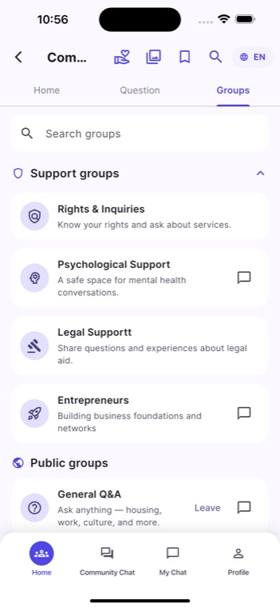
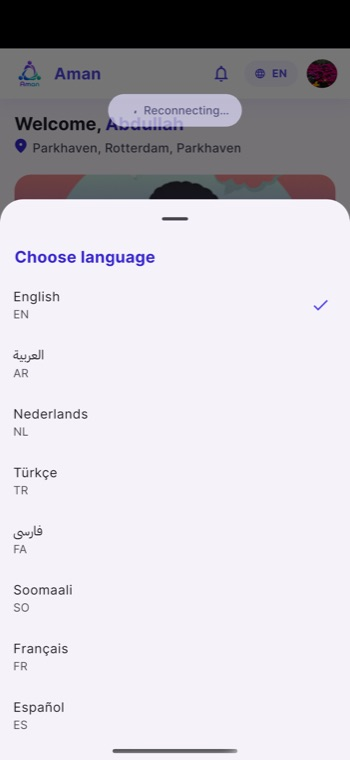
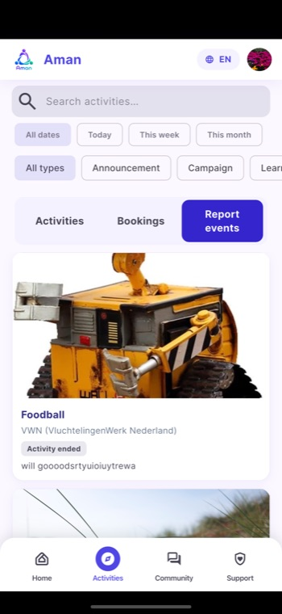
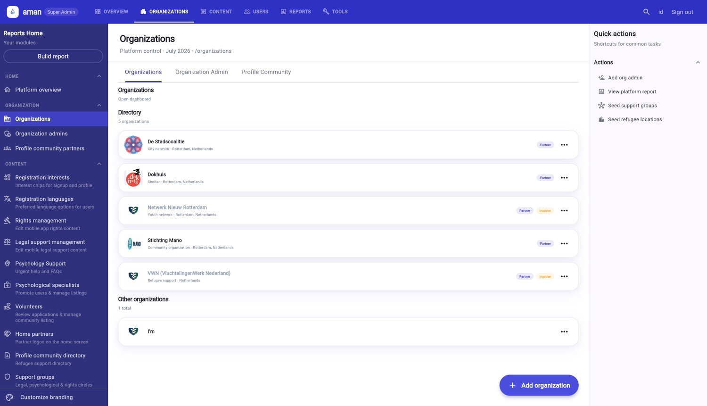
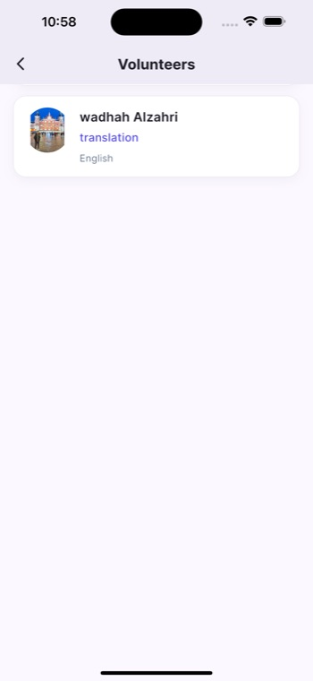
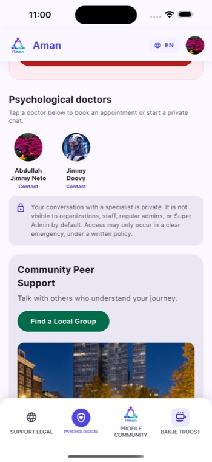

Aman connects newcomers with trusted organizations, activities, community and human support — in their own language, on any device.



Arriving in a new country means facing a wall of language, paperwork and isolation. Aman — Arabic for safety — brings the whole support ecosystem into one place: the organizations that help, the activities that welcome, the community that understands, and the specialists who care.
Refugees, newcomers, volunteers, humanitarian organizations and platform operators — each with a purpose-built experience.
Twelve languages, right-to-left support and automatic Firestore content translation so admins write once and everyone reads in their own tongue.
Role-based access, moderation queues, audit logs and account governance protect a vulnerable community end-to-end.
Everything a humanitarian organization needs to reach, serve and grow a newcomer community — production-grade, multilingual and ready to deploy.
A refugee mobile app, an organization app & web dashboard, and a super-admin app & control panel — all sharing one Firebase backend and one code core.
12 languages with RTL and server-side auto-translation of dynamic content. Write an activity in English; refugees read it in Arabic, Farsi, Tigrinya or Ukrainian.
KPI dashboards, engagement trends, leaderboards and auto-generated insight cards give operators the full pulse of the platform.
Moderation queues, content reporting, community role hierarchy, append-only audit logs and account ban/suspend governance.
Live Firestore streams for chat, feeds and notifications, plus a connectivity layer that queues actions and recovers gracefully offline.
A two-tier inbox + push system with ~31 notification types, deep links and scheduled activity reminders delivered by Cloud Functions.
Every capability below is shipped in the source — from community forums to psychological support to a full technical-support helpdesk.
Group chat, posts with images, 8 reactions, comments, polls, events, general Q&A, saved content and search — the platform's richest module.
Eligibility-aware activities gated by age, gender, camp and profile. Participation requests, waiting lists, reminders and post-event evaluations.
Book appointments with verified specialists and continue in a private, gated one-to-one chat once a request is accepted.
Structured, localized legal-support and rights content so newcomers understand their entitlements in their own language.
A camp comfort-visit program: schedule visits, publish reports and success stories, and let refugees request participation.
A full ticketing helpdesk with replies, status logs, assignment, filtering and metrics — for staff to support users at scale.
Partner organization profiles, home-page partners, and a volunteer directory that matches skills and languages to needs.
Interest selection, refugee registration with camp & city, profile completion and an admin-approved profile-change workflow.
Platform KPIs, time-series trends, engagement leaderboards, insight cards and per-organization stats rendered with fl_chart.
Sign up, verify email, pick a language and interests, and complete a refugee profile with camp and city.
Browse eligible activities and partner organizations, and join community groups tailored to your profile.
Request to join activities, chat with your community, book psychological help and access legal & rights information.
Receive timely reminders and notifications, evaluate activities, and keep everything in sync — even offline.
A layered role & session model — from newcomer to platform operator — with UI gated by a real permission matrix.
The heart of the platform — a welcoming, localized home for everyone rebuilding their life.
A workspace for humanitarian organizations to run their programs and community.
A four-tier role matrix (owner, admin, staff, viewer) gates every action so teams collaborate safely.
Platform-wide access to every organization, content domain and user.
A layered Flutter monorepo where business logic lives once and is hosted natively across mobile and web.
Every technology below is declared in the project's pubspec.yaml and functions/package.json.
A defense-in-depth model spanning authentication, 2,000+ lines of Firestore security rules, moderation and account governance.
Firebase Auth with email verification; a strict default-deny rule closes every path that isn't explicitly opened.
Custom-claim roles (super_admin, organization_admin, support_admin) and a community hierarchy of owner › admin › moderator › member.
Content and member reporting, org-scoped moderation queues, muted/banned enforcement and frozen-community write blocks.
Account moderation logs and community audit logs are immutable — no updates, no deletes — for a tamper-evident trail.
Ban, suspend (with end-date) and re-activate accounts; blocked users are cleanly routed to a dedicated screen.
Server-validated poll votes (±1 deltas), evaluation ratings (1–5), server-only aggregates, and gated private psychological chats.
Aman ships full localization across the app and its dynamic content. Admins write once in English; Cloud Translation fans the text out to all other languages automatically — while user posts and messages are deliberately never machine-translated.
Arabic, Farsi and Urdu render with dedicated Arabic fonts (IBM Plex Sans Arabic, Cairo) and full RTL layout.
A harvest → merge → apply → verify pipeline keeps 2,700+ strings consistent across every language.
A two-tier system: every event writes to a Firestore inbox (single source of truth for the badge & list), and a Cloud Function auto-converts it into a multi-device FCM push.
Operators get a live read on platform health — no third-party analytics required, all computed from Firestore and charted with fl_chart.
80 real screens from all five apps. Click any image to open the lightbox.
The Super-Admin web dashboard is a professional three-column workspace — grouped collapsible navigation, an overview cockpit, platform reports and one-click operational tools.
Home, Content, Operations and Platform — every domain a click away.
Seed default communities, registration interests and refugee locations in one click.
Adaptive layout with content bounding scales from ultra-wide monitors down to tablets.



Built with Flutter for iOS and Android from a single codebase, with Material 3 theming, adaptive sizing, locked text scaling and portrait-optimized layouts.
Live chat, feeds, polls and notification badges powered by Firestore streams.
A dedicated connectivity layer queues actions, retries requests and surfaces clear reconnect states.
Image upload across 13+ storage services, cached network images, SVG icons and video playback.
Aman is a multilingual community and support platform that connects refugees and newcomers with humanitarian organizations, activities, community groups and human support (psychological, legal and rights). It ships as five connected apps over one Firebase backend.
The refugee, organization and super-admin apps are native mobile (iOS & Android) built with Flutter. The organization and super-admin dashboards additionally run as responsive web apps. The Flutter codebase also targets macOS, Windows and Linux.
Twelve: English, Arabic, Spanish, Persian/Farsi, French, Dutch, Russian, Somali, Tigrinya, Turkish, Ukrainian and Urdu — including full right-to-left support. Dynamic content authored in English is auto-translated to the other languages by Cloud Translation.
Authentication is required by default with a strict default-deny security model. Access is role-based (custom claims + community role hierarchy), moderation queues and reporting protect the community, and account moderation is recorded in append-only audit logs.
Yes. A dedicated network layer detects connectivity, queues pending actions (including chat messages), retries automatically and shows clear reconnect indicators so the experience degrades gracefully.
Absolutely — it is multi-tenant by design. Super admins manage many organizations, each with its own admins, activities, communities and moderation scope, while a super admin can open any organization's workspace when needed.
Indicative tiers — final pricing is tailored to each humanitarian partner. Talk to us for a bespoke quote.
Book a walkthrough of Aman and see how one platform can power your organization's mission — in every language your community speaks.